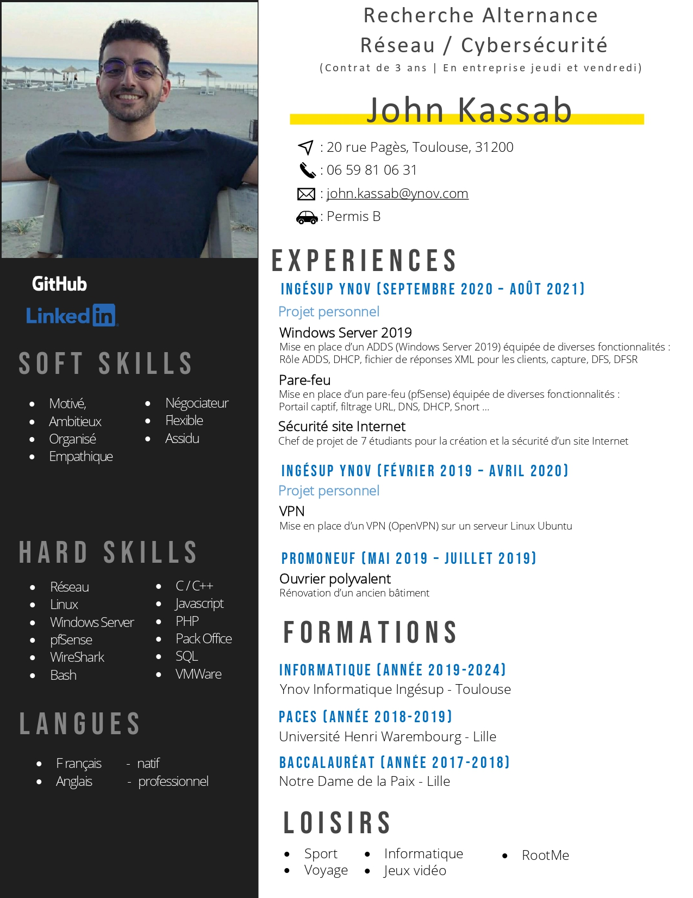

Mon CV + Parcours

Conscient que la réussite d'un projet professionnel ne dépend pas seulement de capacités théoriques,
je me suis attaché à développer des qualités de communication et d’organisation, en adéquation
avec un véritable sens du relationnel car je sais être à l’écoute et faire preuve de discrétion.
Je recherche surtout à accomplir une mission qui s'intègre dans un projet d’entreprise pour avoir de vraies
responsabilités et pour que mon potentiel puisse être utilisé dans un cadre professionnel.
Vous trouverez ci-dessous des liens de redirection vers mon GitHub et mon LinkedIn. N'hésitez pas à me contacter !